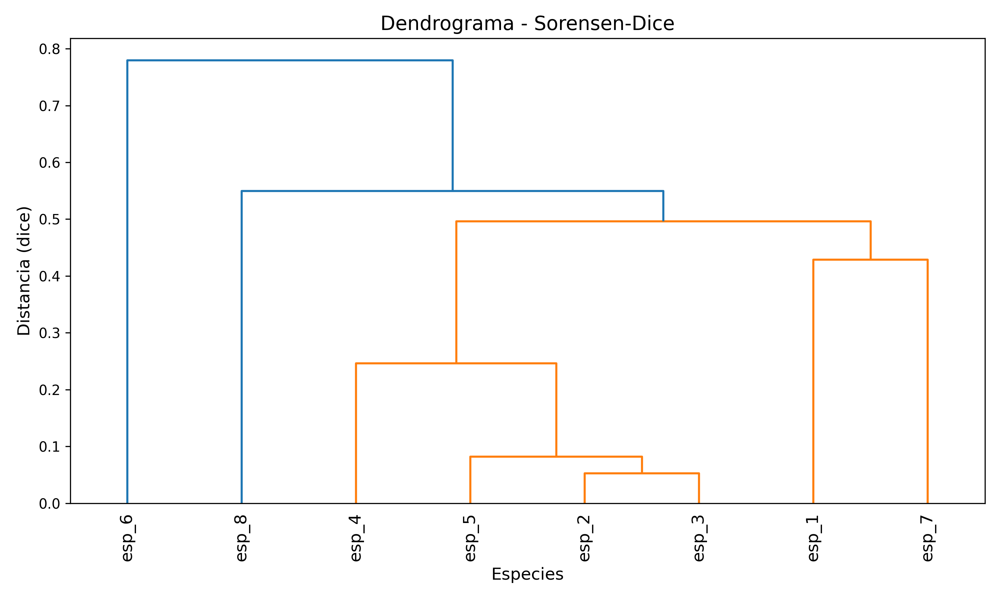
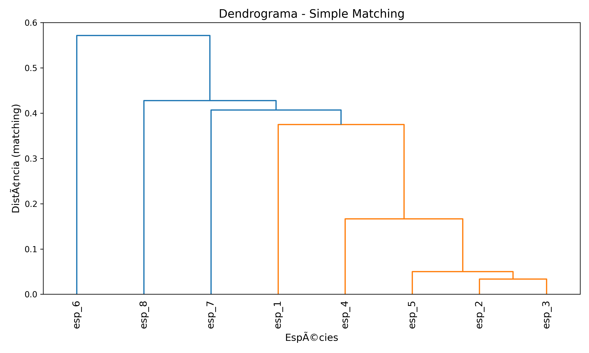
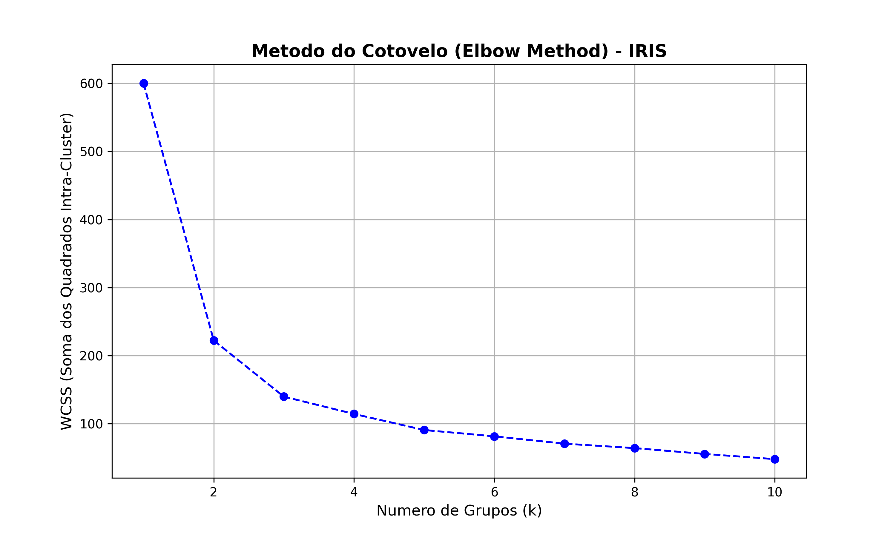
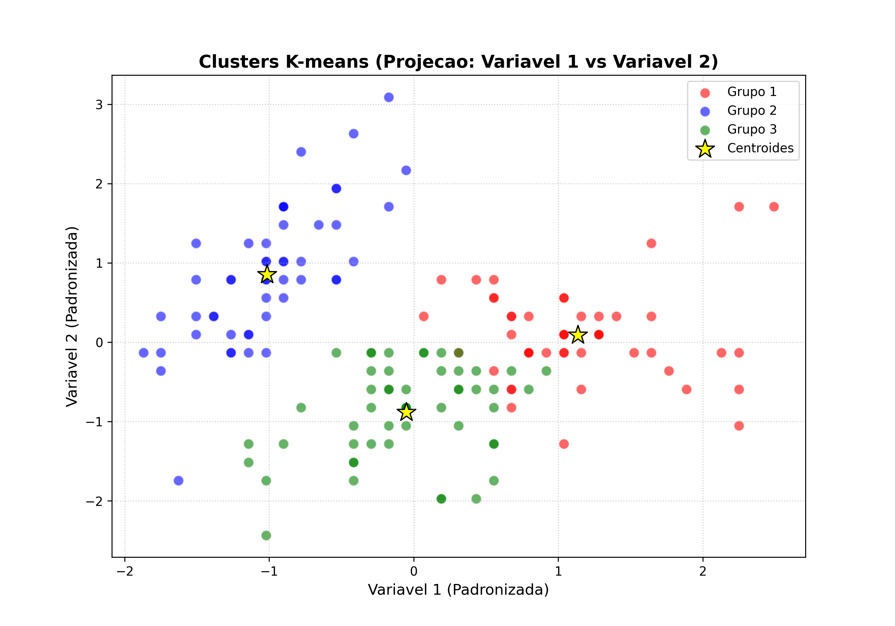

Resolucao do Exercicio 1 - Estatistica Multivariada
Table of Contents
1. Introducao
Este documento apresenta a resolucao da lista 1 de exercicios do nosso curso de introducao a analise estatística multivariada
Todos os scripts estao localizados na pasta src/.
Para mais detalhes tudo que foi tealizado inclusive notas de estudos pode ser acessados em https://github.com/wagnermarques/curso_estatistica_multivariada
O código que produziu estes restulados abaixo se encontram neste mesmo repositório na pasta exercícios/exercicios1/src
obrigado
2. Exercicio 1: Analise de Dados Binarios (Presenca-Ausencia)
O objetivo deste exercicio e analisar a similaridade entre 8 especies com base em dados binarios utilizando diferentes coeficientes.
2.1. Codigo de Carregamento e Processamento
Os dados sao carregados de um arquivo CSV e processados para calcular as matrizes de distancia de Sorensen-Dice e Simple Matching.
import ex1_1_read_data_from_csv import ex1_2_clustering_binario from scipy.spatial.distance import squareform import pandas as pd # 1 read data from csv df = ex1_1_read_data_from_csv.read_data() print("--- Primeiras 10 linhas do dataframe ---") print(df.head(10)) # 3 calcula matriz de distancias usando coeficiente Sorensen-Dice e Simple Matching X = df.iloc[:, 1:].values species = df.iloc[:, 0].values ################################################## # criando e observando as matrizes de distancias # ################################################## dist_dice = ex1_2_clustering_binario.calcular_matriz_distancias(X, metric='dice') dist_sm = ex1_2_clustering_binario.calcular_matriz_distancias(X, metric='matching') # Converter para formato quadrado para visualizacao # isso porque sem essa conversao as mtz estao no formato otimizado o ndarry df_dist_dice = pd.DataFrame(squareform(dist_dice), index=species, columns=species) df_dist_sm = pd.DataFrame(squareform(dist_sm), index=species, columns=species) print("\n--- Matriz de Distancia (Sorensen-Dice) ---") print(df_dist_dice.round(3)) print("\n--- Matriz de Distancia (Simple Matching) ---") print(df_dist_sm.round(3)) # 4 analyze the data using clustering_binario module (gera os dendrogramas) print("\n--- Gerando Dendrogramas ---") ex1_2_clustering_binario.plot_dendrogram(dist_dice, species, 'dice', 'Dendrograma - Sorensen-Dice', 'dendrograma_sorensen_dice.png') ex1_2_clustering_binario.plot_dendrogram(dist_sm, species, 'matching', 'Dendrograma - Simple Matching', 'dendrograma_simple_matching.png') # 5 Atribuindo grupos (exemplo de corte) print("\n--- Atribuicao de Grupos (Exemplos) ---") # Exemplo 1: Cortar o dendrograma Sorensen-Dice para obter 3 grupos df_grupos_dice = ex1_2_clustering_binario.atribuir_grupos(dist_dice, species, t=3, criterion='maxclust') print("\nGrupos (Sorensen-Dice, k=3):") print(df_grupos_dice) # Exemplo 2: Cortar o dendrograma Simple Matching na altura 0.4 df_grupos_sm = ex1_2_clustering_binario.atribuir_grupos(dist_sm, species, t=0.4, criterion='distance') print("\nGrupos (Simple Matching, h=0.4):") print(df_grupos_sm)
2.2. Resultados: Dendrogramas
Os dendrogramas abaixo mostram como as especies se agrupam de acordo com cada metrica de distancia.

Figure 1: Dendrograma utilizando distancia Sorensen-Dice

Figure 2: Dendrograma utilizando distancia Simple Matching
3. Exercicio 2: Agrupamento K-means no Dataset IRIS
Neste exercicio, exploramos o algoritmo K-means para agrupar flores do dataset IRIS e validamos a qualidade dos grupos formados.
3.1. Abordagem 1: Metodo do Cotovelo (Elbow Method)
Esta abordagem foca em encontrar o numero otimo de grupos (k) analisando a variacao da soma dos quadrados intra-cluster (WCSS).
import ex2_1_load_iris import ex2_2_clustering_iris import pandas as pd import numpy as np from sklearn.preprocessing import StandardScaler # 1. Leitura dos dados df = ex2_1_load_iris.load_iris_data() # 2. Mostrar as primeiras 10 linhas print("--- Primeiras 10 linhas do dataset IRIS ---") print(df.head(10)) # 3. Padronizacao (Escalonamento) # Selecionamos as colunas numericas (SEPALLEN, SEPALWID, PETALLEN, PETALWID) variaveis_list = ['SEPALLEN', 'SEPALWID', 'PETALLEN', 'PETALWID'] mtz_vlrs = df[variaveis_list].values species = df['specie'].values scaler = StandardScaler() mtz_vlrs_padrozinados = scaler.fit_transform(mtz_vlrs) print("\nDados padronizados (primeiras 5 linhas):") print(mtz_vlrs_padrozinados[:5]) # 4. Metodo do Cotovelo (Elbow Method) print("\n--- Analise do Numero Otimo de Grupos (Metodo do Cotovelo) ---") ex2_2_clustering_iris.plot_elbow_method( mtz_vlrs_padrozinados, max_k=10, filename='kmeans_elbow_iris.png' ) # 5. Executar K-means # Vamos utilizar k=3 pois sabemos que existem 3 especies no dataset IRIS k_ideal = 3 print(f"\n--- Executando K-means (k={k_ideal}) ---") df_grupos, kmeans_model = ex2_2_clustering_iris.executar_kmeans( mtz_vlrs_padrozinados, species, n_clusters=k_ideal ) # Adicionando a informacao do grupo ao DataFrame original df['Grupo'] = df_grupos['Grupo'] # 6. Mostrar resultados print("\n--- Dados Originais com Atribuicao de Grupos (K-means) ---") print(df.head(10)) # Verificar a contagem em cada grupo print("\nContagem por grupo:") print(df_grupos['Grupo'].value_counts()) # Comparar com as especies originais (Crosstab) print("\n--- Cruzamento: Especie Original vs Grupo K-means ---") print(pd.crosstab(df['specie'], df['Grupo'])) # 7. Visualizacao dos clusters print("\n--- Gerando Grafico de Dispersao dos Clusters ---") ex2_2_clustering_iris.plot_kmeans_clusters( mtz_vlrs_padrozinados, df_grupos['Grupo'].values, kmeans_model.cluster_centers_, filename='kmeans_scatter_iris.png' ) # 8. Analise Univariada (ANOVA) - Verificando a qualidade dos grupos import statsmodels.api as sm from statsmodels.formula.api import ols print("\n--- Analise de Variancia (ANOVA) por Variavel ---") print("H0: Nao ha diferenca entre as medias dos grupos") print("H1: Ha pelo menos uma diferenca entre as medias") for var in variaveis_list: formula = f"{var} ~ C(Grupo)" model = ols(formula, data=df).fit() anova_table = sm.stats.anova_lm(model, typ=2) # Acessando os valores usando o nome da linha 'C(Grupo)' p_valor = anova_table.at['C(Grupo)', 'PR(>F)'] f_stat = anova_table.at['C(Grupo)', 'F'] print(f"\nVariavel: {var}") print(f"F-statistic: {f_stat:.4f}") print(f"p-valor: {p_valor:.4e}") if p_valor < 0.05: print("Resultado: Significativo (Existem diferencas entre os grupos)") else: print("Resultado: Nao significativo (Nao ha diferencas claras)") # 9. Analise Multivariada de Variancia (MANOVA) from statsmodels.multivariate.manova import MANOVA print("\n--- Analise Multivariada de Variancia (MANOVA) ---") print("H0: Os vetores de medias dos grupos sao iguais") print("H1: Pelo menos um vetor de media e diferente") # Criando a formula para todas as variaveis dependentes formula_manova = " + ".join(variaveis_list) + " ~ C(Grupo)" manova = MANOVA.from_formula(formula_manova, data=df) # Exibindo os resultados (Wilks' lambda, Pillai's trace, etc) print(manova.mv_test())
3.1.1. Graficos de Validacao do Numero de Grupos

Figure 3: Analise do Metodo do Cotovelo

Figure 4: Dispersao dos Grupos (Cotovelo)
3.2. Abordagem 2: K-means Simples com Validacao Estatistica
Nesta versao, definimos o numero de grupos diretamente e realizamos testes de ANOVA e MANOVA para verificar se os grupos sao estatisticamente distintos.
# %% import ex2_1_load_iris import ex2_2_clustering_iris import pandas as pd import numpy as np from sklearn.preprocessing import StandardScaler # 1. Leitura dos dados df = ex2_1_load_iris.load_iris_data() # 2. Mostrar as primeiras 10 linhas print("--- Primeiras 10 linhas do dataset IRIS ---") print(df.head(10)) # 3. Padronizacao (Escalonamento) # Selecionamos as colunas numericas (SEPALLEN, SEPALWID, PETALLEN, PETALWID) variaveis_list = ['SEPALLEN', 'SEPALWID', 'PETALLEN', 'PETALWID'] mtz_vlrs = df[variaveis_list].values species = df['specie'].values scaler = StandardScaler() mtz_vlrs_padrozinados = scaler.fit_transform(mtz_vlrs) print("\nDados padronizados (primeiras 5 linhas):") print(mtz_vlrs_padrozinados[:5]) # 4. Definicao do numero de grupos # Altere este valor para escolher quantos grupos deseja formar n_grupos = 3 # 5. Executar K-means print(f"\n--- Executando K-means (k={n_grupos}) ---") df_grupos, kmeans_model = ex2_2_clustering_iris.executar_kmeans( mtz_vlrs_padrozinados, species, n_clusters=n_grupos ) # Adicionando a informacao do grupo ao DataFrame original df['Grupo'] = df_grupos['Grupo'] # 6. Mostrar resultados print("\n--- Dados Originais com Atribuicao de Grupos (K-means) ---") print(df.head(10)) # Verificar a contagem em cada grupo print("\nContagem por grupo:") print(df_grupos['Grupo'].value_counts()) print(df['Grupo'].value_counts()) # exibir nome das variaveis e os grupos atribuídos em df print("\n--- Variaveis e Grupos Atribuidos ---") # Comparar com as especies originais (Crosstab) print("\n--- Cruzamento: Especie Original vs Grupo K-means ---") print(pd.crosstab(df['specie'], df['Grupo'])) # 7. Visualizacao dos clusters print("\n--- Gerando Grafico de Dispersao dos Clusters ---") ex2_2_clustering_iris.plot_kmeans_clusters( mtz_vlrs_padrozinados, df_grupos['Grupo'].values, kmeans_model.cluster_centers_, filename='kmeans_scatter_iris_simple.png' ) # 8. Analise Univariada (ANOVA) - Verificando a qualidade dos grupos # 1. Iteração por Variável: Para cada uma das 4 variáveis (SEPALLEN, SEPALWID, etc.), ele realiza um teste ANOVA. # 2. Teste de Hipótese: # * H0 (Hipótese Nula): As médias de todos os grupos são iguais para aquela variável (o agrupamento não foi eficaz para distinguir essa característica). # * H1 (Hipótese Alternativa): Pelo menos um grupo tem uma média significativamente diferente (o agrupamento conseguiu separar bem essa característica). # O script já interpreta o p-valor (usando o padrão de 5% ou 0.05) e te diz se o resultado foi significativo. # # Se os grupos forem bons, esperamos que o p-valor seja muito pequeno (ex: algo como 1.23e-15) e a mensagem diga "Significativo" para a maioria das variáveis. # # Pode rodar o script novamente para ver os resultados: import statsmodels.api as sm from statsmodels.formula.api import ols print("\n--- Analise de Variancia (ANOVA) por Variavel ---") print("H0: Nao ha diferenca entre as medias dos grupos") print("H1: Ha pelo menos uma diferenca entre as medias") for var in variaveis_list: formula = f"{var} ~ C(Grupo)" model = ols(formula, data=df).fit() anova_table = sm.stats.anova_lm(model, typ=2) # Acessando os valores usando o nome da linha 'C(Grupo)' p_valor = anova_table.at['C(Grupo)', 'PR(>F)'] f_stat = anova_table.at['C(Grupo)', 'F'] print(f"\nVariavel: {var}") print(f"F-statistic: {f_stat:.4f}") print(f"p-valor: {p_valor:.4e}") if p_valor < 0.05: print("Resultado: Significativo (Existem diferencas entre os grupos)") else: print("Resultado: Nao significativo (Nao ha diferencas claras)") # 9. Analise Multivariada de Variancia (MANOVA) from statsmodels.multivariate.manova import MANOVA print("\n--- Analise Multivariada de Variancia (MANOVA) ---") print("H0: Os vetores de medias dos grupos sao iguais") print("H1: Pelo menos um vetor de media e diferente") # Criando a formula para todas as variaveis dependentes # Ex: "SEPALLEN + SEPALWID + PETALLEN + PETALWID ~ C(Grupo)" formula_manova = " + ".join(variaveis_list) + " ~ C(Grupo)" manova = MANOVA.from_formula(formula_manova, data=df) # Exibindo os resultados (Wilks' lambda, Pillai's trace, etc) print(manova.mv_test()) #from notebooklm #referencias do livro Hair et al. (2024) para interpretação dos resultados da MANOVA: #Aqui está como o livro orienta a interpretação de cada uma dessas quatro medidas estatísticas: #Lambda de Wilks (Wilks' lambda): É a estatística mais comumente utilizada para testar a significância geral entre os grupos. Ela considera todas as funções discriminantes para examinar se os grupos são de algum modo diferentes[fn:760]. #Critério de Pillai (Pillai's trace) e Traço de Hotelling (Hotelling-Lawley trace): São medidas semelhantes ao Lambda de Wilks, pois também consideram todas as raízes características (ou seja, avaliam todas as dimensões de diferença simultaneamente)[fn:760]. #Maior raiz característica de Roy (Roy's greatest root): Diferentemente das outras três, esta estatística mede as diferenças focando apenas na primeira função discriminante (a dimensão principal)[fn:517][fn:760]. ##Como o livro recomenda escolher entre elas? Apesar de, na grande maioria das vezes, todas levarem à mesma conclusão, Hair et al. apontam diretrizes específicas para a escolha do melhor indicador, dependendo das características dos seus dados[fn:761]: #Critério de Pillai: É considerado o teste mais robusto. O autor recomenda que ele seja utilizado (junto ou no lugar do Lambda de Wilks) caso ocorram violações nas suposições básicas: se o tamanho da amostra diminuir, se os grupos tiverem tamanhos muito diferentes (células desiguais), ou se a suposição de homogeneidade de covariâncias for violada[fn:761]. #Lambda de Wilks ou Pillai: São as medidas de preferência quando as considerações básicas de planejamento foram atendidas perfeitamente (amostra adequada, pressupostos atendidos e células proporcionais)[fn:761]. #Maior Raiz de Roy: É o teste estatístico mais poderoso, mas apenas se o pesquisador estiver seguro de que todas as suposições (como normalidade e homocedasticidade) foram estritamente cumpridas e que as variáveis dependentes estão fortemente inter-relacionadas em uma única dimensão de efeito[fn:760][fn:761]. #Interpretando o seu resultado específico: Observando a sua tabela na seção C(Grupo), a coluna Pr > F (que é o seu p-valor) apresenta 0.0000 para todos os quatro testes. ##A interpretação prática usando as diretrizes do Hair é que, independentemente do critério utilizado — seja o mais poderoso (Roy) ou o mais robusto (Pillai) —, existe uma diferença estatisticamente altamente significativa entre os seus grupos. O modelo demonstra que o fator Grupo afeta as variáveis analisadas de forma conjunta, com uma probabilidade de isso ser obra do acaso praticamente nula. #Referências [fn:517] Hair et al., Análise Multivariada de Dados (Significância geral - Estimação simultânea em Análise Discriminante). [fn:760] Hair et al., Análise Multivariada de Dados (Medidas estatísticas para avaliação de diferenças ao longo de dimensões - MANOVA). [fn:761] Hair et al., Análise Multivariada de Dados (Diretrizes e robustez dos testes Wilks, Pillai, Hotelling e Roy).
3.2.1. Analise de Resultados
A analise inclui:
- Crosstab: Comparacao entre a especie real e o grupo atribuido.
- ANOVA: Teste univariado para cada variavel (SEPALLEN, SEPALWID, etc).
- MANOVA: Teste multivariado considerando todas as variaveis simultaneamente.

Figure 5: Dispersao dos Grupos (Simples)
4. Conclusao
Consegui praticar a análise de agrupamento
O Livro do hair não fala do método ebowl de kmeans mas percebi que as multiplos agrupamentos me pareceu resultar em grupos melhores que no kmeans simples onde eu escolhi 3 grupos e os grupos foram formados sem a inteligencia do ebowl. Já o dendograma é uma técnica mais interessante porque podemos escolher o ponto de corte. Consegui colocar isso no código, podemos cortar e obter os grupos. Agradeço muitíssimo a oportunidade e a compreenção.